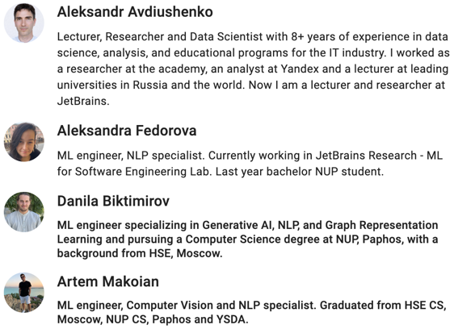

Youth AI club
Lecture 1. Introduction to Python. JetBrains Academy plugin in PyCharm
Alex Avdiushenko
October 2, 2024
Main Goals of the club
- Deeply understand basic concepts of machine learning and neural nets
- Implement AI models using Python and PyTorch
- Prepare for the international IOAI Olympiad (https://ioai-official.org/)
- Take the first step, after which you can continue self-study
Homework every week, and a contest every two months 👍
Instructors
Python Language IS
- easy to start using
- free and open source
- (almost) portable
- high-level
- interpreted, not compiled
- well suited for REPL = Read Eval Print Loop

First example of Python code

Another Example
Writing in Python is like writing pseudocode. Suppose you know, that
\[ e^x=\sum_{k=0}^\infty \frac{1}{k!}x^k = 1 + x + \frac{x^2}{2!} + \dots \]
Everything in Python is an object
Every object has:
- id — where it's located (~memory address)
- type — a set of values and operations on these values
- value — the value
Size of INT in Python language
What do you think, how much memory INT takes?
- In general, 1 bit represents only two values (it's 0 or 1)
- 1 byte = 8 bits, and this already represents integers from 0 to 255 or from -127 to 127
Can it be depending on the platform:
- 4 bytes (32 bits) or
- 8 bytes (64 bits)?
Why so much and not the same?
Cpython open source realization:
struct _longobject {
// macros with
// 1. the object’s reference counter (8 bytes)
// 2. and a pointer to the corresponding type object (8 bytes)
// 3. and extension field ob_size (8 bytes)
PyObject_VAR_HEAD
// int value adds 0, 4 (32x) or 8 bytes (64x)
// SUM(for i=0 through abs(ob_size)-1) ob_digit[i] * 2**(SHIFT*i)
digit ob_digit[1];
};
DEMO: tools for programming and studying Python
- Install PyCharm IDE
- Quick start guide, need to specify a Python interpreter
- Download JetBrains Academy plugin
- All the assignments and deadlines can be found on Cogniterra course
- Homework 1: If you are not familiar with Python, then go through Introduction to Python in PyCharm ❤️